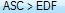
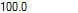

import glob #grab the files we want to use files_list = (glob.glob('C:\LL\Output_2_TXT\**.txt')) #define and open app neurotracers_app = App(r'C:\LL\Neurotraces\edfAsc.exe') neurotracers_app.open() #select correct configuration doubleClick() #change sampling rate to 256 doubleClick() type('256') #loop through all the files for file in files_list[109:]: #select input area input_box = Region(Region(122,76,474,86)).getBottomLeft() #paste the file name into the area doubleClick(input_box) paste(file) #create the output file name output_name = file[:19] + 'Script_edf' + file[-23:-4] + '.edf' #copy into the output file_box output_box = Region(Region(112,172,481,38)).getBottomLeft() doubleClick(output_box) paste(output_name) #create the file click() #wait for it to finish analysing wait(900) type(Key.ENTER)